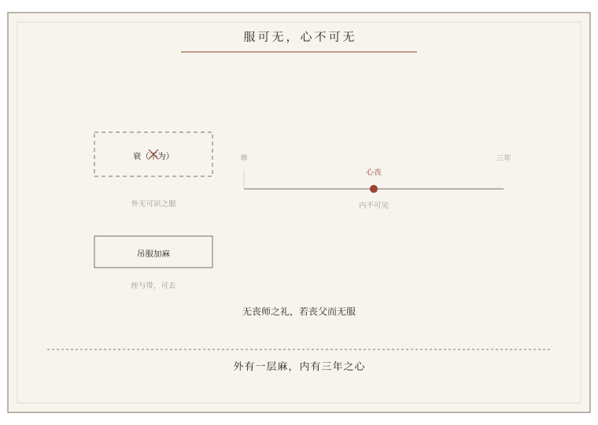

檀弓上 · 三·四十九 · 第 252 课
孔子之丧，门人疑所服。子贡曰：「昔者夫子之丧颜渊，若丧子而无服；丧子路亦然。请丧夫子若丧父而无服。」注「无丧师之礼」「无服，不为衰，吊服而加麻，心丧三年」。
说什么事：老师死了，弟子该穿什么？礼无其文，于是有人问了。
落在哪一层：礼，兼及礼数与礼意。论「无服之服」。
为何编在此位：上节记孔子之死，此节记死后弟子之服。死与服相接，礼乃有继。
【经】孔子之喪，門人疑所服。子貢曰：「昔者夫子之喪顏淵，若喪子而無服；喪子路亦然。請喪夫子若喪父而無服。」
【注】无丧师之礼。无服，不为衰，吊服而加麻，心丧三年。
【疏】此一节论弟子为师丧制之礼。依礼，丧师无服，其事分明；今夫子之丧，门人疑者，以夫子圣人，与凡师不等，当应特加丧礼，故疑所服。知为师吊服加麻者，案《丧服》「朋友麻」，其师与朋友同，故知亦加麻也。必知丧师与朋友同者，案下云「孔子之丧，二三子皆绖而出；群居则绖，出则否」，是弟子相为与为夫子同，但绖出与不出有异，明其服同也。云「吊服而加麻」，麻谓绖与带也，皆以麻为之，故云「加麻」也。论云，为师及朋友皆既葬除之。
疑所服 不知当服何服。
无丧师之礼 注语。礼无为师服丧之文。
若丧子而无服 如丧子而不为服。
不为衰 注语。不作衰服。
吊服而加麻 著吊服而加麻绖麻带。
心丧三年 注语。外无服，内守三年之哀。
孔子之丧，门人不知该服什么。子贡说：「从前夫子丧颜渊，如同丧子而不为服；丧子路也是如此。请让我们丧夫子，如同丧父而不为服。」
此节一问一答。问者「疑所服」——不是不知礼，是知礼无其文而不敢自定。答者不立新礼，只举旧例：夫子于颜渊、子路若丧子而无服，则弟子于夫子亦可若丧父而无服。此所谓以师之待弟子，定弟子之待师。注补出实状：无服者不为衰，而吊服加麻，心丧三年。外有一层麻，内有三年之心，此之谓「无服之服」。
第一层 礼无其文 注「无丧师之礼」。五服之制，为父斩衰、为君斩衰，为师无文。非礼之疏，是礼之严：师弟子以道合，非以血属，故不以服属之。
第二层 疑而不自定 门人之疑，最可味。若径自为衰，是以情乱礼；若径自无服，是以礼薄情。两皆不可，故问。问者，礼之所以能续也。
第三层 以旧例定新事 子贡不曰「当如何」，而曰「昔者夫子之丧颜渊若丧子而无服」。此是以夫子的旧行，为今日之据。礼有不行之处，则求之于行者之旧迹。
第四层 吊服加麻、心丧三年 注补两层：外则吊服加麻（麻谓绖与带），内则心丧三年。疏证之：师与朋友同服，故《丧服》「朋友麻」即可推；又引下文「二三子皆绖而出」为证。此见古礼之比例：无专条者，以类相推。
与今日何干 一个不在五服之内的人死了，该怎样待他。此节给的样是：不为形式之服，而守其实心；外有一层可识之麻，内有三年不可见之哀。今人或以形式代心，或以无心而废形式，两失之。
| 左 | 右 |
|---|---|
| 门人疑所服 | 礼无其文而不敢自定 |
| 无丧师之礼 | 五服不为师设 |
| 若丧子而无服 | 夫子待颜渊、子路之旧例 |
| 请丧夫子若丧父而无服 | 以旧例定今事 |
| 不为衰 | 外无服 |
| 吊服而加麻 | 外有一层可识 |
| 心丧三年 | 内有三年不可见 |
画一处丧次的内外，视点平。堂上设一方帐，帐内一具棺，棺上覆素帛；帐外两侧各立三四个弟子（衣素、腰间系麻带、头上加麻绖），皆面朝棺。阶下另有一人执麻带在手，似在系。庭中一棵树，树影落在阶上。不写文字、不画人面细节。赭色只用在棺上素帛的系结与一人腰间的麻带。
